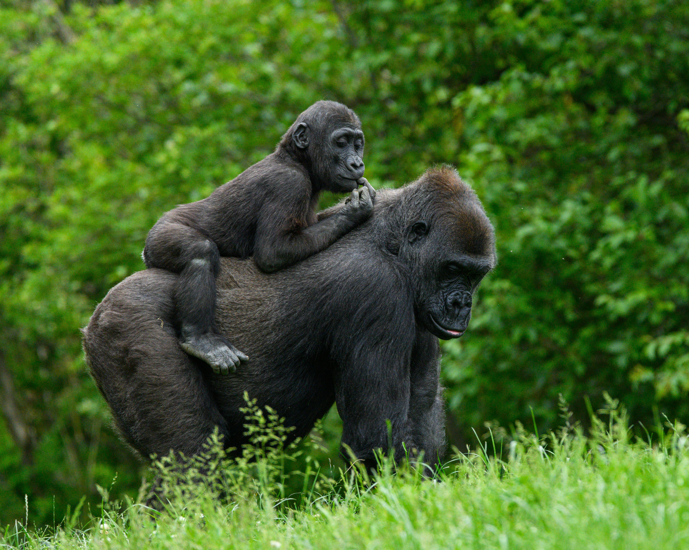

Experience the supreme crown jewels of the Pearl of Africa on this premier 8-day wildlife and gorilla safari with Roots East Africa Adventure. Spanning Uganda's most legendary national parks, this comprehensive itinerary begins with on-foot tracking of wild white rhinos at Ziwa Rhino Sanctuary and marveling at the thunderous explosion of the Victoria Nile through Murchison Falls. Continue through tea estates to Kibale Forest National Park for thrilling habituated wild chimpanzee tracking. Traverse Queen Elizabeth National Park on morning savannah game drives across the Kasenyi plains, sail past dense hippo pods on a Kazinga Channel boat safari, and seek rare tree-climbing lions in Ishasha. The climax arrives in Bwindi Impenetrable National Park with an unforgettable face-to-face mountain gorilla trekking encounter, culminating in peaceful canoe relaxation along scenic Lake Bunyonyi before returning to Kampala or Entebbe.

Pickup in Kampala/Entebbe & Transfer to Murchison Falls via Ziwa Rhino Tracking
Morning Savannah Game Drive & Afternoon Victoria Nile Boat Safari
Scenic Transfer to Kibale Forest National Park via Fort Portal Tea Country
Chimpanzee Tracking in Kibale Forest & Transfer to Queen Elizabeth National Park
Kasenyi Plains Morning Game Drive & Kazinga Channel Boat Cruise
Ishasha Tree-Climbing Lions Game Drive & Transfer to Bwindi Forest
Mountain Gorilla Trekking in Bwindi Rainforest & Transfer to Lake Bunyonyi
Morning Lake Bunyonyi Boat Cruise & Return Journey to Kampala or Entebbe
Meet your Roots East Africa Adventure driver guide after breakfast in Kampala or Entebbe to begin your 8-day Uganda safari. Head northward through the scenic towns of Luwero and Nakasongola, making your first stop at Ziwa Rhino Sanctuary. Here, participate in an exhilarating on-foot rhino tracking experience with sanctuary rangers to view Uganda's wild white rhinos. Enjoy lunch at the sanctuary before continuing to Murchison Falls National Park. Enter the park and drive to the Top of the Falls to marvel at the Victoria Nile crashing through a narrow seven-meter rock gorge before tumbling 43 meters into the churning pool below. Check in to your safari lodge for dinner and rest.
Wake early for a morning game drive across the northern savannahs of Murchison Falls. Track Rothschild's giraffes, African elephants, Cape buffalos, Jackson's hartebeests, oribi, Uganda kobs, and prowling lions and leopards in the crisp morning light. Return to your lodge for lunch. In the afternoon, embark on the legendary three-hour boat cruise up the Victoria Nile toward the bottom of Murchison Falls. View massive pods of hippos, basking crocodiles, and rich waterbirds along the riverbanks, culminating in spectacular views of the roaring waterfall from below. Return to camp for dinner.
After breakfast, check out and embark on a scenic drive southwest through the verdant Albertine Rift valley. Travel past traditional homesteads and sprawling tea plantations surrounding Fort Portal beneath the dramatic backdrop of the Rwenzori Mountains. Enjoy lunch en route in Fort Portal before continuing to Kibale Forest National Park, celebrated worldwide as the primate capital of East Africa with 13 primate species. Arrive in the late afternoon, check in to your forest lodge, and savor dinner amidst the sounds of the tropical rainforest.
Report to Kanyanchu Visitor Center after breakfast for a briefing by Uganda Wildlife Authority rangers before entering the rainforest to track habituated wild chimpanzees. Follow their vocal pant-hoots and tree-drumming through the canopy, spending an exhilarating hour observing them feed, socialize, and groom. After the trek, return for lunch and check out. Take a scenic drive southward across the Equator into Queen Elizabeth National Park, taking in breathtaking views of the Rwenzori foothills and crater lakes. Check in to your safari lodge for dinner.
Set out at first light for a game drive across the Kasenyi plains, tracking lions, leopards, spotted hyenas, large herds of elephants, and Cape buffalos. Return to the lodge for lunch and relaxation. In the afternoon, head to Mweya peninsula for a thrilling two-hour boat safari along the famous Kazinga Channel. Sail within meters of massive pods of hippos, basking Nile crocodiles, bathing elephants, and extraordinary flocks of waterbirds including pelicans, skimmers, and fish eagles. Conclude with a sunset drive back to your lodge for dinner.
Following breakfast, check out and drive south through the Ishasha sector of Queen Elizabeth National Park, famed for its tree-climbing lions. Search the spreading branches of mature sycamore fig trees where lions regularly lounge to escape the heat and flies, alongside topis, kobs, and buffalos. Enjoy lunch en route before climbing into the terraced mountain highlands toward Bwindi Impenetrable National Park. Arrive in the late afternoon, check in to your rainforest lodge, and relax with dinner in preparation for the gorilla trek.
Rise early for breakfast, collect your packed lunch, and transfer to park headquarters for a vital briefing by UWA rangers. Accompanied by experienced guides and trackers, trek into the dense undergrowth in search of a habituated mountain gorilla family. Trekking takes between 2 to 6 hours over rugged terrain. Upon locating them, spend a life-changing hour observing these gentle giants in their wild sanctuary. After receiving your certificate, take a scenic drive to Lake Bunyonyi, checking in to your lakeside resort for dinner and relaxation overlooking the 29 islands.
Enjoy a peaceful morning boat ride or canoe excursion exploring the historic islands of Lake Bunyonyi, followed by breakfast overlooking the misty water. Check out and begin your return drive to Kampala or Entebbe. Travel through the rolling hills of Ankole, stopping in Mbarara for lunch, and pause at the Equator monument in Kayabwe for photographs and craft shopping. Arrive in Kampala or Entebbe in the late afternoon or evening, where your guide drops you off at your hotel or Entebbe International Airport for your departure flight.